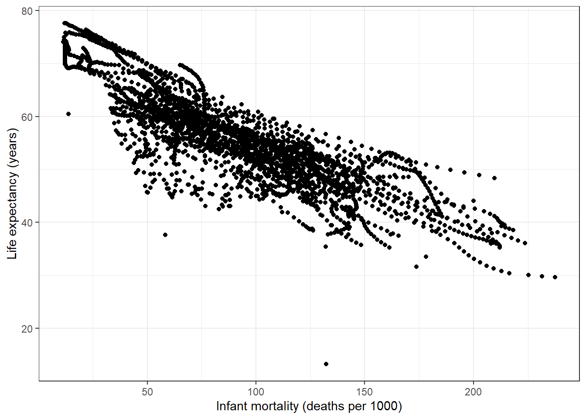

Zane’s R Coding Exercise
For this exercise, I want to work on the gapminder data from the dslabs package. First, I want to get an idea of what this dataset looks like.
# The dslabs package is where the data we want to use lives.
library(dslabs)
# We also need the tidyverse package for analysis later.
library(tidyverse)## -- Attaching packages --------------------------------------- tidyverse 1.3.1 --## v ggplot2 3.3.5 v purrr 0.3.4
## v tibble 3.1.3 v dplyr 1.0.7
## v tidyr 1.1.3 v stringr 1.4.0
## v readr 1.4.0 v forcats 0.5.1## -- Conflicts ------------------------------------------ tidyverse_conflicts() --
## x dplyr::filter() masks stats::filter()
## x dplyr::lag() masks stats::lag()# Use the scales package to make plot labels nicer
library(scales)##
## Attaching package: 'scales'## The following object is masked from 'package:purrr':
##
## discard## The following object is masked from 'package:readr':
##
## col_factor# Open the help file for the gapminder data to examine contents.
help(gapminder)## starting httpd help server ...## done# Examine the structure of the gapminder data
str(gapminder)## 'data.frame': 10545 obs. of 9 variables:
## $ country : Factor w/ 185 levels "Albania","Algeria",..: 1 2 3 4 5 6 7 8 9 10 ...
## $ year : int 1960 1960 1960 1960 1960 1960 1960 1960 1960 1960 ...
## $ infant_mortality: num 115.4 148.2 208 NA 59.9 ...
## $ life_expectancy : num 62.9 47.5 36 63 65.4 ...
## $ fertility : num 6.19 7.65 7.32 4.43 3.11 4.55 4.82 3.45 2.7 5.57 ...
## $ population : num 1636054 11124892 5270844 54681 20619075 ...
## $ gdp : num NA 1.38e+10 NA NA 1.08e+11 ...
## $ continent : Factor w/ 5 levels "Africa","Americas",..: 4 1 1 2 2 3 2 5 4 3 ...
## $ region : Factor w/ 22 levels "Australia and New Zealand",..: 19 11 10 2 15 21 2 1 22 21 ...# Get a summary of the gapminder data variables
summary(gapminder)## country year infant_mortality
## Albania : 57 Min. :1960 Min. : 1.5000000000
## Algeria : 57 1st Qu.:1974 1st Qu.: 16.0000000000
## Angola : 57 Median :1988 Median : 41.5000000000
## Antigua and Barbuda: 57 Mean :1988 Mean : 55.3086187648
## Argentina : 57 3rd Qu.:2002 3rd Qu.: 85.1000000000
## Armenia : 57 Max. :2016 Max. :276.9000000000
## (Other) :10203 NA's :1453
## life_expectancy fertility population
## Min. :13.2000000000 Min. :0.84000000000 Min. : 31238.0000
## 1st Qu.:57.5000000000 1st Qu.:2.20000000000 1st Qu.: 1333486.0000
## Median :67.5400000000 Median :3.75000000000 Median : 5009043.0000
## Mean :64.8116225699 Mean :4.08352094999 Mean : 27014608.9626
## 3rd Qu.:73.0000000000 3rd Qu.:6.00000000000 3rd Qu.: 15231788.7500
## Max. :83.9000000000 Max. :9.22000000000 Max. :1376048943.0000
## NA's :187 NA's :185
## gdp continent region
## Min. : 40395127.89 Africa :2907 Western Asia :1026
## 1st Qu.: 1845780110.00 Americas:2052 Eastern Africa : 912
## Median : 7794215003.00 Asia :2679 Western Africa : 912
## Mean : 147954410013.00 Europe :2223 Caribbean : 741
## 3rd Qu.: 55399648248.00 Oceania : 684 South America : 684
## Max. :11744219459700.00 Southern Europe: 684
## NA's :2972 (Other) :5586# Print the class of the gapminder object
class(gapminder)## [1] "data.frame"For this exercise, I am only interested in the data from countries in Africa.
# Filter out records where the continent is "Africa"
africadata <- gapminder %>%
dplyr::filter(continent == "Africa")
# View structure and summary of the Africa-only data to see what changed.
str(africadata)## 'data.frame': 2907 obs. of 9 variables:
## $ country : Factor w/ 185 levels "Albania","Algeria",..: 2 3 18 22 26 27 29 31 32 33 ...
## $ year : int 1960 1960 1960 1960 1960 1960 1960 1960 1960 1960 ...
## $ infant_mortality: num 148 208 187 116 161 ...
## $ life_expectancy : num 47.5 36 38.3 50.3 35.2 ...
## $ fertility : num 7.65 7.32 6.28 6.62 6.29 6.95 5.65 6.89 5.84 6.25 ...
## $ population : num 11124892 5270844 2431620 524029 4829291 ...
## $ gdp : num 1.38e+10 NA 6.22e+08 1.24e+08 5.97e+08 ...
## $ continent : Factor w/ 5 levels "Africa","Americas",..: 1 1 1 1 1 1 1 1 1 1 ...
## $ region : Factor w/ 22 levels "Australia and New Zealand",..: 11 10 20 17 20 5 10 20 10 10 ...summary(africadata)## country year infant_mortality
## Algeria : 57 Min. :1960 Min. : 11.4000000000
## Angola : 57 1st Qu.:1974 1st Qu.: 62.2000000000
## Benin : 57 Median :1988 Median : 93.4000000000
## Botswana : 57 Mean :1988 Mean : 95.1239462887
## Burkina Faso: 57 3rd Qu.:2002 3rd Qu.:124.7000000000
## Burundi : 57 Max. :2016 Max. :237.4000000000
## (Other) :2565 NA's :226
## life_expectancy fertility population
## Min. :13.2000000000 Min. :1.50000000000 Min. : 41538.0000
## 1st Qu.:48.2300000000 1st Qu.:5.16000000000 1st Qu.: 1605232.5000
## Median :53.9800000000 Median :6.16000000000 Median : 5570981.5000
## Mean :54.3815514276 Mean :5.85099439776 Mean : 12235960.9625
## 3rd Qu.:60.1000000000 3rd Qu.:6.86000000000 3rd Qu.: 13888152.2500
## Max. :77.6000000000 Max. :8.45000000000 Max. :182201962.0000
## NA's :51 NA's :51
## gdp continent region
## Min. : 46589992.710 Africa :2907 Eastern Africa :912
## 1st Qu.: 837349134.775 Americas: 0 Western Africa :912
## Median : 2447627163.000 Asia : 0 Middle Africa :456
## Mean : 9346377578.250 Europe : 0 Northern Africa :342
## 3rd Qu.: 6552473745.000 Oceania : 0 Southern Africa :285
## Max. :193499101150.000 Australia and New Zealand: 0
## NA's :637 (Other) : 0The two relationships I am interested in are: * infant mortality and life expectancy, and * population and life expectancy.
# Create a data frame with only infant mortality and life expectancy
africa_im_le <- africadata %>%
dplyr::select(infant_mortality, life_expectancy)
str(africa_im_le)## 'data.frame': 2907 obs. of 2 variables:
## $ infant_mortality: num 148 208 187 116 161 ...
## $ life_expectancy : num 47.5 36 38.3 50.3 35.2 ...summary(africa_im_le)## infant_mortality life_expectancy
## Min. : 11.4000000000 Min. :13.2000000000
## 1st Qu.: 62.2000000000 1st Qu.:48.2300000000
## Median : 93.4000000000 Median :53.9800000000
## Mean : 95.1239462887 Mean :54.3815514276
## 3rd Qu.:124.7000000000 3rd Qu.:60.1000000000
## Max. :237.4000000000 Max. :77.6000000000
## NA's :226# Create a data frame with only population size and life expectancy
africa_ps_le <- africadata %>%
dplyr::select(population, life_expectancy)
str(africa_ps_le)## 'data.frame': 2907 obs. of 2 variables:
## $ population : num 11124892 5270844 2431620 524029 4829291 ...
## $ life_expectancy: num 47.5 36 38.3 50.3 35.2 ...summary(africa_ps_le)## population life_expectancy
## Min. : 41538.0000 Min. :13.2000000000
## 1st Qu.: 1605232.5000 1st Qu.:48.2300000000
## Median : 5570981.5000 Median :53.9800000000
## Mean : 12235960.9625 Mean :54.3815514276
## 3rd Qu.: 13888152.2500 3rd Qu.:60.1000000000
## Max. :182201962.0000 Max. :77.6000000000
## NA's :51Next I will visualize these two relationships.
# scatterplot of life expectancy vs infant mortality
africa_im_le %>%
# define which fields to plot
ggplot(aes(x = infant_mortality, y = life_expectancy)) +
# make the plot a scatterplot
geom_point() +
# change the way the plot looks (i.e. changing "non-data ink")
theme_bw() +
# make the axis titles nicer
labs(
x = "Infant mortality (deaths per 1000)",
y = "Life expectancy (years)"
)## Warning: Removed 226 rows containing missing values (geom_point).
# scatterplot of life expectancy vs population size
africa_ps_le %>%
# define which fields to plot
ggplot(aes(x = population, y = life_expectancy)) +
# make the plot a scatterplot
geom_point() +
# change the way the plot looks
theme_bw() +
# Make the axis titles nicer
labs(
x = "Population",
y = "Life expectancy (years)"
) +
# customize the x-axis scale
scale_x_continuous(
# use a log scale for population size
trans = "log10",
# format the values with commas rather than scientific notation
labels = scales::comma
)## Warning: Removed 51 rows containing missing values (geom_point).
Uh-oh! We can see that due to the inclusion of multiple years for each country, there is clearly autocorrelation and this makes the graphs look quite weird. We also got an error about missing data, with more data points missing for life expectancy.
Now I only want to plot one year at a time, so I will combine this with the missing data. First, I can find which years have missing data, and then I can choose a year to plot which does not have (or has the least amount of) missing values.
africadata %>%
# Filter for any rows where either variable is NA (missing)
dplyr::filter(is.na(infant_mortality) | is.na(life_expectancy)) %>%
# Count up the number of missing records for each year
dplyr::count(year, sort = TRUE, name = "# records missing")## year # records missing
## 1 2016 51
## 2 1961 17
## 3 1962 16
## 4 1963 16
## 5 1964 15
## 6 1965 14
## 7 1966 13
## 8 1967 11
## 9 1968 11
## 10 1960 10
## 11 1969 7
## 12 1971 6
## 13 1972 6
## 14 1973 6
## 15 1970 5
## 16 1974 5
## 17 1975 5
## 18 1976 3
## 19 1977 3
## 20 1978 2
## 21 1979 2
## 22 1980 1
## 23 1981 1It appears that for either of these two fields, there are missing records in 2016, and for years from 1961 through 1981. I will use the year 2000 for the next plot.
# Filter only records where the year is 2000
africadata_2000 <- africadata %>%
filter(year == 2000)
# Check to see if everything worked alright
str(africadata_2000)## 'data.frame': 51 obs. of 9 variables:
## $ country : Factor w/ 185 levels "Albania","Algeria",..: 2 3 18 22 26 27 29 31 32 33 ...
## $ year : int 2000 2000 2000 2000 2000 2000 2000 2000 2000 2000 ...
## $ infant_mortality: num 33.9 128.3 89.3 52.4 96.2 ...
## $ life_expectancy : num 73.3 52.3 57.2 47.6 52.6 46.7 54.3 68.4 45.3 51.5 ...
## $ fertility : num 2.51 6.84 5.98 3.41 6.59 7.06 5.62 3.7 5.45 7.35 ...
## $ population : num 31183658 15058638 6949366 1736579 11607944 ...
## $ gdp : num 5.48e+10 9.13e+09 2.25e+09 5.63e+09 2.61e+09 ...
## $ continent : Factor w/ 5 levels "Africa","Americas",..: 1 1 1 1 1 1 1 1 1 1 ...
## $ region : Factor w/ 22 levels "Australia and New Zealand",..: 11 10 20 17 20 5 10 20 10 10 ...summary(africadata_2000)## country year infant_mortality
## Algeria : 1 Min. :2000 Min. : 12.3000000000
## Angola : 1 1st Qu.:2000 1st Qu.: 60.8000000000
## Benin : 1 Median :2000 Median : 80.3000000000
## Botswana : 1 Mean :2000 Mean : 78.9294117647
## Burkina Faso: 1 3rd Qu.:2000 3rd Qu.:103.3000000000
## Burundi : 1 Max. :2000 Max. :143.3000000000
## (Other) :45
## life_expectancy fertility population
## Min. :37.600000000 Min. :1.99000000000 Min. : 81154.0000
## 1st Qu.:51.750000000 1st Qu.:4.15000000000 1st Qu.: 2304687.0000
## Median :54.300000000 Median :5.55000000000 Median : 8799165.0000
## Mean :56.362745098 Mean :5.15607843137 Mean : 15659800.0392
## 3rd Qu.:60.000000000 3rd Qu.:5.96000000000 3rd Qu.: 17391242.0000
## Max. :75.000000000 Max. :7.73000000000 Max. :122876723.0000
##
## gdp continent region
## Min. : 201900820.3 Africa :51 Eastern Africa :16
## 1st Qu.: 1273938255.0 Americas: 0 Western Africa :16
## Median : 3237716325.0 Asia : 0 Middle Africa : 8
## Mean : 11553631293.1 Europe : 0 Northern Africa : 6
## 3rd Qu.: 8654357070.0 Oceania : 0 Southern Africa : 5
## Max. :132877648091.0 Australia and New Zealand: 0
## (Other) : 0Now I can remake the plots using only the data from the year 2000, solving both plotting problems at the same time.
# scatterplot of life expectancy vs infant mortality
africadata_2000 %>%
# define which fields to plot
ggplot(aes(x = infant_mortality, y = life_expectancy)) +
# make the plot a scatterplot
geom_point() +
# change the way the plot looks (i.e. changing "non-data ink")
theme_bw() +
# make the axis titles nicer
labs(
x = "Infant mortality (deaths per 1000)",
y = "Life expectancy (years)"
)
# scatterplot of life expectancy vs population size
africadata_2000 %>%
# define which fields to plot
ggplot(aes(x = population, y = life_expectancy)) +
# make the plot a scatterplot
geom_point() +
# change the way the plot looks
theme_bw() +
# Make the axis titles nicer
labs(
x = "Population",
y = "Life expectancy (years)"
) +
# customize the x-axis scale
scale_x_continuous(
# use a log scale for population size
trans = "log10",
# format the values with commas rather than scientific notation
labels = scales::comma
)
Now we have a good idea what the relationships look like: I expect a negative linear relationship between life expectancy and infant mortality, and no relationship between life expectancy and population.
I will fit a simple linear model to test both of these predictions.
# Fit both of the simple linear models
fit1 <- lm(life_expectancy ~ infant_mortality, data = africadata_2000)
fit2 <- lm(life_expectancy ~ population, data = africadata_2000)
# Get information about both of the models
summary(fit1)##
## Call:
## lm(formula = life_expectancy ~ infant_mortality, data = africadata_2000)
##
## Residuals:
## Min 1Q Median 3Q
## -22.6650766748976 -3.7086603997697 0.9913871391747 4.0408166718418
## Max
## 8.6816915663029
##
## Coefficients:
## Estimate Std. Error t value Pr(>|t|)
## (Intercept) 71.29330828546043 2.42610657284026 29.38589 < 2.22e-16 ***
## infant_mortality -0.18916349246248 0.02868796885284 -6.59383 2.826e-08 ***
## ---
## Signif. codes: 0 '***' 0.001 '**' 0.01 '*' 0.05 '.' 0.1 ' ' 1
##
## Residual standard error: 6.220949227023 on 49 degrees of freedom
## Multiple R-squared: 0.4701473982393, Adjusted R-squared: 0.459334079836
## F-statistic: 43.47854938746 on 1 and 49 DF, p-value: 2.826006335307e-08summary(fit2)##
## Call:
## lm(formula = life_expectancy ~ population, data = africadata_2000)
##
## Residuals:
## Min 1Q Median 3Q
## -18.428571686541 -4.602074328526 -2.567996779676 3.799482515294
## Max
## 18.801538217547
##
## Coefficients:
## Estimate Std. Error t value Pr(>|t|)
## (Intercept) 5.593113747430e+01 1.468136266356e+00 38.09669 < 2e-16 ***
## population 2.756150287112e-08 5.458582637860e-08 0.50492 0.61588
## ---
## Signif. codes: 0 '***' 0.001 '**' 0.01 '*' 0.05 '.' 0.1 ' ' 1
##
## Residual standard error: 8.52417276487 on 49 degrees of freedom
## Multiple R-squared: 0.005176022733971, Adjusted R-squared: -0.01512650741431
## F-statistic: 0.2549447135981 on 1 and 49 DF, p-value: 0.6158781131943From the first model (with infant mortality as the predictor), I obtain an estimated slope of about -0.19 (p < 0.001). Thus, I conclude that for African countries in the year 2000, an increase of 1 infant death out of every 1000 births was associated with a decrease of 0.19 years in life expectancy (about -2.28 months).
From the second model (with population size as the predictor), I obtained a very very small slope which rounds to 0 unless I use an unreasonable amount of precision. Since the p-value is also quite large (p = 0.6159), I think it is reasonable to conclude that there was no (linear) relationship between life expectancy and population size for African countries in the year 2000.